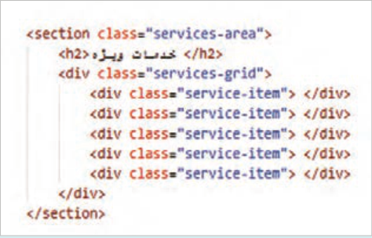
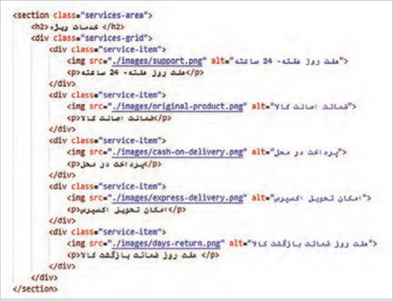
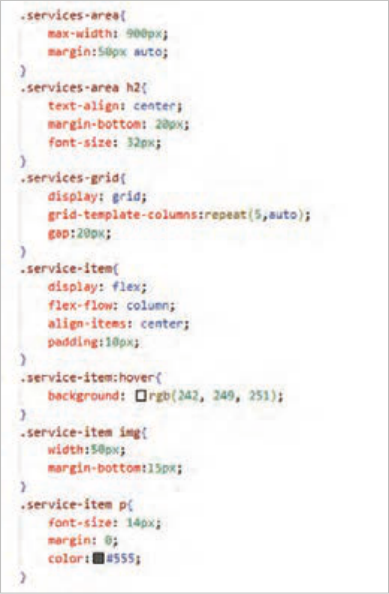
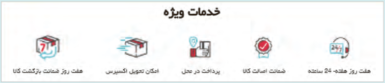
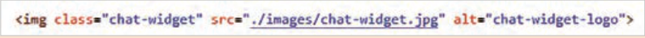
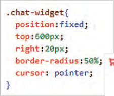
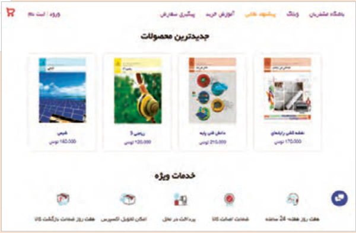

کارگاه چیدمان صفحه
صفحه ۱۳۹
فعالیت
رنگ زمینه کارتها را با مقدار rgb(251, 248, 249) تنظیم کنید و نتیجه را بررسی کنید.
چند کارت دیگر به مجموعه کارتها اضافه کنید و نحوۀ چیدمان کارتها را مشاهده کنید.
پهنای مرورگر را تا حد امکان کم کنید و وضعیت چیدمان کارتها را بررسی کنید. آیا با کم شدن فضا، کارتها به سطر بعد منتقل میشوند؟ ویژگی flex-wrap:wrap را حذف کنید و مجددًا نتیجۀ کوچک شدن پهنای صفحه را بررسی کنید.
مقدار ویژگی justify-content را با مقادیر space-around و space-evenly جایگزین کنید و نتیجۀ چینش محصولات را بررسی کنید.
بیشتر بدانید
طرحبندی صفحه با چیدمان شبکهای (Grid) برخلاف مدل flex که تنها در یک بعد (سطر یا ستون) عمل میکند، مدل Grid امکان ایجاد سطرها و ستونهای حاوی محتوا را بهصورت همزمان فراهم میآورد. با استفاده از سیستم grid، میتوان کنترل دقیقی بر روی فاصلهها و اندازهها داشت. این روش انعطافپذیر است و برای ایجاد ساختارهای شبکهای منظم و واکنشگرا بسیار مفید است. برای ایجاد یک چیدمان شبکهای از ویژگی display با مقدار grid استفاده میشود. تعداد ستونهای شبکه توسط ویژگی grid-template-columns و فاصلۀ بین ستونها توسط ویژگی gap تعیین میشود.
طراحی بخش «خدمات ویژه» با استفاده از مدل Grid
کار کارگاهی
در فایل index.html تغییرات زیر را بهصورت تدریجی اعمال کنید.
1 پنج تصویر لوگو، مطابق شکل زیر دانلود کنید و درون پوشه تصاویر سایت (images) ذخیره کنید.
2 یک عنصر <section> با کلاس services-area برای بخش «خدمات ویژه» ایجاد کنید. این عنصر باید حاوی یک عنصر <h2> و یک نگهدارنده <div> با کلاس services-grid باشد. عنصر <div> آیتمهای خدمات ویژه را درون خود جای میدهد.
3 هر یک از آیتمهای خدمات ویژه را توسط یک عنصر <div> با کلاس service-item ایجاد کنید.
این آیتمها با استفاده از مدل گرید در چند ستون کنار هم قرار میگیرند.

صفحه ۱۴۰
4 هر آیتم خدمات ویژه شامل یک تصویر لوگو (img) و عنوان آن (p) است. کد HTML بخش خدمات ویژه را مشابه کد شکل زیر تکمیل کنید:


5 استایل عناصر را بهصورت تدریجی به صفحه اضافه کنید و نتیجه را در مرورگر مشاهده کنید.
ویژگی display: grid عنصر services-grid را
به یک نگهدارنده گرید تبدیل میکند. در نتیجه تمام فرزندان مستقیم آن (service-item) به آیتمهای گرید تبدیل شده و میتوان آنها را در ردیفها و ستونها توزیع نمود.
ویژگی grid-template-columns با پنج
مقدار auto پنج ستون ایجاد میکند که پهنای آنها وابسته به محتوای هر ستون خواهد بود. به کمک این ویژگی تصاویر لوگو در پنج ستون ظاهر میشوند.
ویژگی gap:20px فاصلۀ میان ستونها را برابر 20 پیکسل قرار میدهد.
صفحه ۱۴۱

بیشتر بدانید
موقعیتدهی به عناصر صفحه توسط ویژگی position ویژگی position یکی از مهمترین ویژگیها برای کنترل نحوه قرارگیری عناصر در صفحه است. این ویژگی برای تنظیم جایگاه یک عنصر نسبت به عناصر والد یا عناصر دیگر کاربرد دارد. ویژگی position دارای مقادیر static، relative، absolute، fixed و sticky به شرح زیر است:
static: تمام عناصر صفحه دارای مقدار پیش فرض static هستند.
relative: جایگاه یک عنصر را نسبت به موقعیت اولیه آن مشخص میکند. برای جابهجایی عنصر نسبت به موقعیت اولیه، از ویژگیهای top، left، right و bottom استفاده میشود.
absolute: موقعیت عنصر را نسبت به عنصر والد مشخص میکند.
fxied: جایگاه یک عنصر را بهصورت ثابت حفظ میکند.
تصویر یک دکمه chat-widget را در موقعیت (30، 600) بهصورت ثابت نمایش دهید. برای اینکار تصویر دکمه چت ویجت را در ابعاد 45×45 به صفحه اضافه کنید. برای تنظیم اندازه تصویر از برنامه paint استفاده کنید. تصویر را قبل از برچسب <main/> قرار دهید:

استایل تصویر را مانند کدهای روبهرو تنظیم کنید.

تصویر این دکمه در گوشه پایین سمت راست صفحه نمایش داده خواهد شد.

Page 139
Activity
Set the background color of the cards to the value rgb(251, 248, 249) and check the result.
Add a few more cards to the set of cards and observe how the cards are laid out.
Reduce the browser width as much as possible and check the layout of the cards. When space decreases, do the cards move to the next row? Remove the flex-wrap:wrap property and again check the result of reducing the page width.
Replace the value of the justify-content property with space-around and space-evenly and check the result of arranging the products.
Learn more
Page layout with grid layout (Grid) Unlike the flex model, which works in only one dimension (row or column), the Grid model lets you create rows and columns that hold content at the same time. Using the grid system, you can have precise control over spacing and sizes. This method is flexible and very useful for creating regular, responsive grid structures. To create a grid layout, use the display property with the value grid. The number of grid columns is set by the grid-template-columns property and the spacing between columns by the gap property.
Designing the “Special services” section using the Grid model
Workshop
In the index.html file, apply the following changes gradually.
1 Download five logo images as in the figure below and save them in the site images folder (images).
2 Create a <section> element with the class services-area for the “Special services” section. This element should contain an <h2> element and a container <div> with the class services-grid. The <div> element holds the special service items inside it.
3 Create each special service item with a <div> element that has the class service-item.
These items are placed next to each other in several columns using the grid model.
Page 140
4 Each special service item includes a logo image (img) and its title (p). Complete the HTML code of the special services section like the code in the figure below:
5 Gradually add element styles to the page and view the result in the browser.
ویژگی display: grid عنصر services-grid را
turns it into a grid container. As a result, all of its direct children (service-item) become grid items and can be distributed in rows and columns.
ویژگی grid-template-columns با پنج
auto values creates five columns whose width depends on the content of each column. With this property the logo images appear in five columns.
The gap:20px property sets the spacing between columns to 20 pixels.
Page 141
Learn more
Positioning page elements with the position property The position property is one of the most important properties for controlling how elements are placed on the page. This property is used to set the position of an element relative to parent elements or other elements. The position property has the values static, relative, absolute, fixed, and sticky as follows:
static: all page elements have the default value static.
relative: sets the position of an element relative to its initial position. To move the element relative to its initial position, use the top, left, right, and bottom properties.
absolute: sets the position of the element relative to the parent element.
fxied: keeps the position of an element fixed.
Display the image of a chat-widget button fixed at position (30, 600). To do this, add the chat widget button image at 45×45 to the page. Use the paint program to set the image size. Place the image before the <main/> tag:
Set the image style like the code opposite.
This button image will be shown in the bottom-right corner of the page.